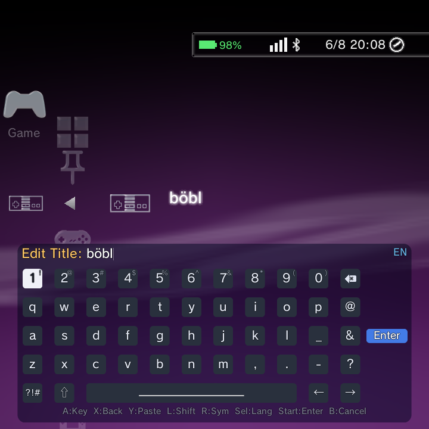

This is your master controls page. It covers the handful of system shortcuts that work everywhere on your handheld, then every button in the Nano menu, screen by screen.
Want to raise or lower the screen brightness right now? Hold Select and tap Vol + to brighten, or Vol - to dim. It works on any screen, at any time.
System shortcuts
These are handled by the operating system itself, so they work everywhere: on the home screen, inside a game, and inside any app.
| Shortcut | What it does |
|---|---|
| Select + Vol + | Increase screen brightness |
| Select + Vol - | Decrease screen brightness |
| Vol + / Vol - alone | System volume up / down |
| Power (short press) | Sleep or wake (blanks the panel and drops to power save) |
| Power (long press, about 1.5 seconds) | Raise the Nano overlay: over a game it opens on the Quick Menu; on the home it opens the Quick Menu Power submenu (Restart, Power Off, Recovery). See the in-game overlay. |
| Power + Select (held) | Emergency: disable the system display shader (an escape hatch when a shader makes the screen unreadable) |
| Hold Back 10 seconds, or hold the Guide / Mode button 10 seconds | Emergency restart of a frozen or dead home screen |
| Lid, hall, or slide switch | Sleep on close (on devices that have one) |
A couple of details worth knowing:
- The brightness combo only fires while Select is genuinely held down, checked against the live key state so a "stuck" modifier cannot fire it by accident. Brightness applies to the main display and is clamped to your panel's minimum and maximum.
- If you ever hold Back for longer than 6 seconds by accident, the state clears itself, so there is nothing to worry about.
If your handheld freezes, the emergency restart (hold Back or Guide / Mode for 10 seconds) brings the home screen back without a full reboot.
The in-game overlay
You do not have to quit a game to change a setting. While a game or app is running, hold Power to raise the Nano overlay right on top of it. Your game stays paused behind a soft dim, and the familiar XMB slides in over the top.
The overlay opens on the Quick Menu, so the things you reach for mid-game are right there:
- Screen Brightness and Performance Mode
- Quick Settings tiles
- The Power submenu (Restart, Power Off, Recovery)
- and anything else on the Quick Menu
From the overlay you can also move across to the other categories, for example to jump straight to a different game, or open a game's Options.
To leave the overlay and go back to your game, press B, or hold Power again. Your game resumes exactly where it was.
Note: holding Power on the home screen (with no game running) opens the Quick Menu Power submenu instead. The full overlay only appears over a running game or app.
In the menu: every button
Inside the Nano menu, buttons change meaning a little depending on where you are: the home screen, a drilled-in game or media list, or the on-screen keyboard (OSK). Here is the full map.
| Button | Home menu | Game / media list | On-Screen Keyboard |
|---|---|---|---|
| D-Pad Up | Move up (in photo/music, cycle previous sort) | Move up a row (hold to scroll) | Cursor up |
| D-Pad Down | Move down | Move down a row (hold to scroll) | Cursor down |
| D-Pad Left | Move left across XMB categories | Horizontal navigation | Cursor left |
| D-Pad Right | Move right across XMB categories | Horizontal navigation | Cursor right |
| A | Confirm or launch the selected item | Launch a game or open a submenu | Submit query / password |
| B | Back, exit submenu, or close a modal | Back one level | Close the keyboard |
| X | Open the Options menu | Open the Options menu | Backspace |
| Y | Cycle Sort By (Music: cycle visualizer; Photo: 2D/3D) | Cycle Sort By | Paste from the system clipboard |
| L1 | Toggle XMB/text mode; reorder a system up | Page-skip back 10 items; previous photo/track | Toggle Shift (ABC/abc/symbols) |
| R1 | Toggle Quick Resume; reorder a system down | Page-skip forward 10 items; next photo/track | Toggle symbols mode |
| L2 / R2 | Not used in the menu | Not used | Not used |
| Select | Open global Search; cycle keyboard language | Close search; toggle photo info or video OSD | Cycle language |
| Start | Submit the keyboard; setup-wizard navigation | Play/pause a slideshow or video | Submit query |
A few handy notes:
- The analog stick and the HAT are treated the same as the D-Pad. They fire at about 90 percent throw, then repeat.
- On the special "remove an item" lists (custom Game Systems, and music/photo/video folders), pressing Y removes the highlighted entry.
- On the on-screen keyboard, press Y to paste from the system clipboard. This is handy for long URLs and passwords you have copied elsewhere.
- You can start a global search from the home screen with Select. See the search page for more.

Permission dialogs are now controller-navigable: the first button is focused when the dialog appears, and the confirm buttons activate straight from the pad, so you do not need a touch panel to allow or deny a permission.
Hold to scroll
In a big library you do not have to tap the D-Pad over and over. Hold D-Pad Up or D-Pad Down in a game or media list and the list starts scrolling, then speeds up the longer you hold.
- The scroll waits about 300 milliseconds before it starts repeating, then repeats every 200 milliseconds and keeps accelerating (down to a fast 50 millisecond floor).
- This accelerating hold-to-scroll now works in DSi and Minima game lists too, not just XMB.
- The DSi carousel home uses a steadier, gentler cadence and only accelerates once you drill into a list.
Bumper page-skip
The shoulder buttons are your fast-travel keys inside a list.
- Inside a drilled-in game or media list, L1 jumps back 10 items and R1 jumps forward 10 items. This is the quickest way to move through a large collection, and it works in DSi and Minima lists too.
- On a photo or music list, L1 and R1 step to the previous or next photo/track.
- On the home screen (not drilled in), L1 and R1 instead reorder your systems or toggle XMB text mode and Quick Resume.
Emulator controls cheat sheet
Once a game is running, the controls belong to the emulator, not the Nano menu. Here is the short version of how to open the in-game menu, exit, and save or load state across the main emulator families. Follow the links for the full button tables.
| Emulator family | Open the in-game menu | Exit the game | Save / load state |
|---|---|---|---|
| RetroArch cores | The RetroArch menu combo (see the linked page) | From the RetroArch menu | RetroArch save/load state, or bindable hotkeys |
| DraStic Nano (Nintendo DS) | Short-tap Back | Long-hold Back | Bindable Save State / Load State actions (slot 0), usable with the overlay closed |
| PPSSPP and standalone cores | Each app's own in-app menu | Each app's own menu | Each app's own save-state feature |
For the details:
- RetroArch: RetroArch controls.
- DraStic Nano: DraStic Nano controls and the drastic-nano overlay guide.
- PPSSPP and other standalone emulators use their own in-app menus; open them the way that app documents.
Where to go next
- Playing through RetroArch? See RetroArch controls for opening the menu and exiting a game.
- Playing a Nintendo DS game? See DraStic Nano controls.
- Plugging in a USB mouse or keyboard? See Mouse and keyboard.